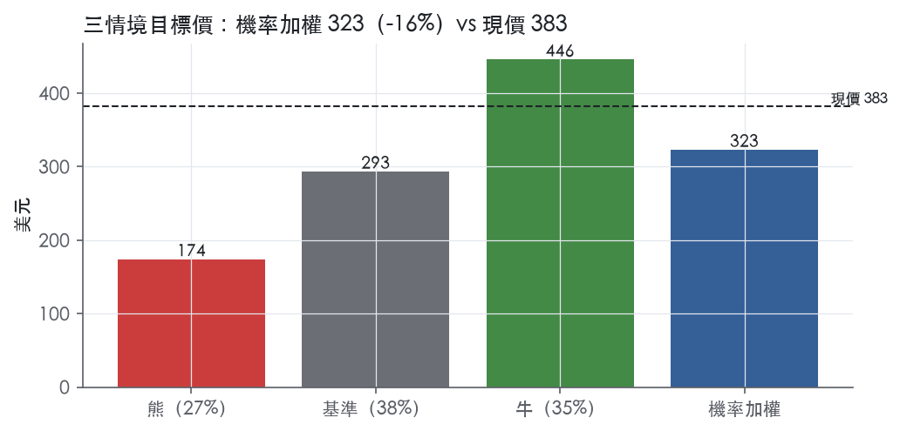
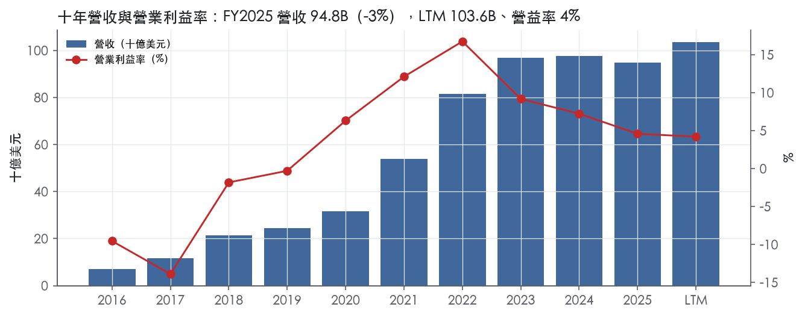
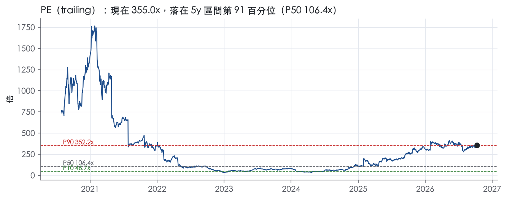
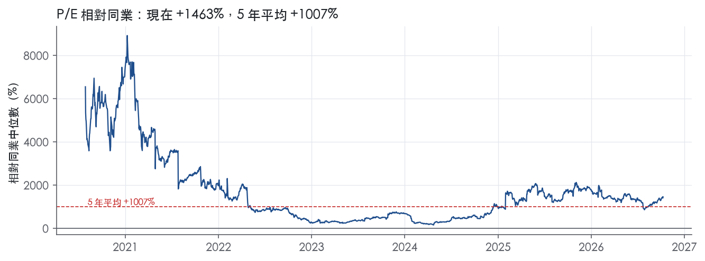
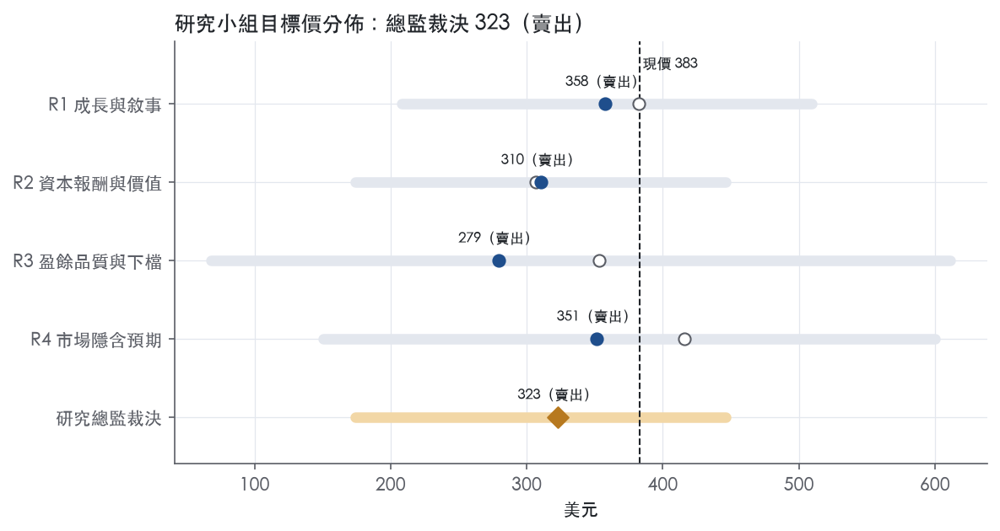
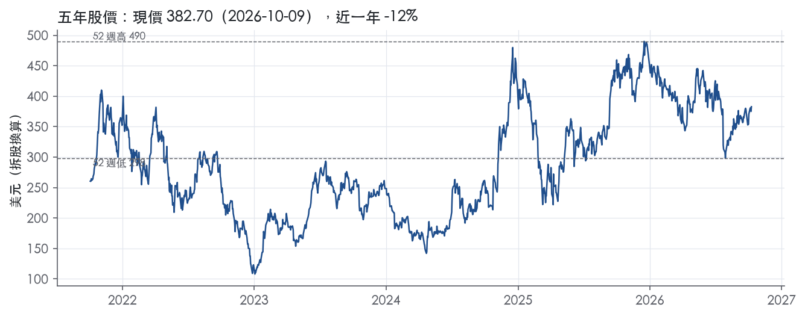

評等總表 › 非必需消費 › TSLA
AI投資期壓低ROIC，選擇權溢價將收斂，看空｜評等 賣出｜目標價 323
| 報告日 | 評等 | 目標價 | 當時股價 | 超額報酬 |
|---|---|---|---|---|
| 2026-10-09 | 賣出 | 323 | 383 | -25.9% |
| 評等 | 賣出 |
| 12 個月目標價 | 323 美元 |
| 現價 | 382.70 美元（2026-10-09） |
| 預期報酬 | 股價 -15.7%＋股息 0.0%＝總報酬 -15.7%；同業籃門檻 10.2%，超額 -25.9% |
| 估值方法 | EV/Sales 10.5x，套在未來四季的營收 |
| 三情境 | 熊 174／基準 293／牛 446 |
| 研究流程 | 四位研究員兩輪辯論＋研究總監裁決 |
| 資料來源 | SEC EDGAR XBRL、Tiingo、FRED（全免費） |
AI投資期壓低ROIC，選擇權溢價將收斂，看空（研究總監裁決，四位研究員兩輪辯論後）
評等 賣出｜12 個月目標價 323 美元（總監三情境機率加權 314 與研究員中位數 331 各半）｜現價 382.70（2026-10-09）
預期報酬：股價 -15.7%＋股息 0.0%＝總報酬 -15.7%。同業籃門檻 10.2%，超額 -25.9%。
估值方法：EV/Sales 10.5x，套在未來四季的營收。三情境：熊 174（27%）／基準 293（38%）／牛 446（35%）。
什麼會讓研究總監改變看法：Q3 財報營益率 ≥ 5% 且 2027 年 capex 指引低於 2026 年，倍數回 5 年 P50、轉中性；公司單獨揭露 Robotaxi 營收或每英里經濟性，上調牛機率。
| 過去四季（實際，FY2026Q2） | 未來四季 | 第 5–8 季 | 第 9–12 季 | |
|---|---|---|---|---|
| 營收（B） | 103.6B | 110.9B | 120.9B | 129.3B |
| 營收成長 | 11.8% | 7.0% | 9.0% | 7.0% |
| 營業利益率 | 4.2% | 3.0% | 3.5% | 4.0% |
| EPS（美元） | 1.08 | 0.60 | 0.78 | 0.96 |
| EPS 成長 | -35.8% | -44.4% | 29.4% | 23.5% |
| 每股股息（美元） | — | 0.00 | 0.00 | 0.00 |
| P/E（現價） | 355.0x | 638.6x | 493.4x | 399.7x |
| 股息殖利率（現價） | — | — | — | — |
過去四季為申報數字；預測為研究總監的假設、程式計算。倍數與殖利率都用現價計算，用來看現價對應各期獲利的高低。
| 情境 | 機率（歷史） | 故事 | 未來四季營收成長 | 第 5–8 季營益率 | 倍數 | 目標價 | 股價漲跌 |
|---|---|---|---|---|---|---|---|
| 熊 | 27%（27%） | 補貼退場需求真空加價格戰、capex 照常使 FCF 轉負延續，倍數落到 5 年 P10；對應風險表第 1 條（汽車毛利率／營益率壓縮）與第 3 條（capex 侵蝕 FCF），觸發情節為「公司沒寫」第 1 條 | 1.0% | 2.0% | 6.6x | 174 | -54.6% |
| 基準 | 38%（38%） | 高基期壓 NTM 成長至 7%，AI 投資期費用年增快過營收、營益率 3%，倍數回到 5 年 P50 之下 | 7.0% | 3.5% | 10.5x | 293 | -23.4% |
| 牛 | 35%（35%） | Robotaxi 無人監督擴城並揭露營收，選擇權重新加價到帶現值之上，但不回到 2021 年成長 70% 時期的 P90；補 y3 使情境內部一致 | 14.0% | 7.0% | 15.0x | 446 | 16.5% |
目標價由程式依研究總監的驅動與倍數計算；機率由研究總監給定。括號內是歷史頻率：把這檔股票過去十年 12 個月報酬的波動形狀，置中在基準情境，結果落在各情境附近的比例。

四位研究員用不同方法各自估值，回應研究總監的質疑後交出第二輪，最後由總監逐點裁決。各研究員的主張見第七章，裁決理由見第八章，完整論證見《研究底稿》。
| 立場（一輪→二輪） | 加權目標價（一輪→二輪） | 評等（一輪→二輪） | 第二輪倍數 | 熊～牛目標價 | |
|---|---|---|---|---|---|
| R1 成長與敘事 | 看空→看空 | 382→358 | 減碼→賣出 | 11.5x | 208～509 |
| R2 資本報酬與價值 | 看空→看空 | 307→310 | 賣出→賣出 | 10.5x | 174～446 |
| R3 盈餘品質與下檔 | 看空→看空 | 353→279 | 賣出→賣出 | 250.0x | 68～611 |
| R4 市場隱含預期 | 看空→看空 | 416→351 | 中立→賣出 | 300.0x | 151～600 |
| 研究總監裁決 | 看空 | 323 | 賣出 | 10.5x | 174～446 |
目標價由程式依各自的驅動與倍數計算；評等＝機率加權總報酬 − 同業籃門檻。
Tesla 是一家把電動車、能源儲存與人工智慧（自動駕駛、機器人）綁在一起賣的垂直整合製造商。我們專注於將人工智慧帶入現實世界，透過FSD (Supervised)和Robotaxi等產品與服務，以及開發並商業化AI機器人（包括Optimus）¹。我們設計、開發、製造、銷售和租賃高性能純電動車以及能源發電與儲存系統，並持續向客戶提供AI相關及強化的軟體與服務¹。客戶面向全球消費者（乘用車）、公用事業與商業用戶（Megapack/Powerwall）以及未來的出行服務使用者（Robotaxi）。
公司財報分兩大段：「汽車及服務和其他」與「能源發電和儲存」¹。FY2025總營收94.83B美元，其中汽車及服務分部營收82.056B美元（占比約86.5%），能源發電和儲存分部營收12.771B美元（占比約13.5%）。汽車銷售收入下降9%至65.821B美元，主因現金交付量下降約8%及因銷售組合與較高客戶激勵（如優惠融資方案）導致的平均售價降低¹。服務及其他收入成長19%至12.530B美元，主因付費超充使用、非保修維修與碰撞維修收入、二手車銷售量及汽車保險業務收入增加¹。能源發電和儲存收入成長27%至12.771B美元，主因Megapack與Powerwall部署量增加，部分被Megapack平均售價下降抵銷¹。該分部毛利率由26.2%提升至29.8%，優於汽車分部17.8%的毛利率（較去年18.4%下滑）¹。2025年生產約166萬輛消費型車輛，交付約164萬輛¹；能源儲存部署46.7 GWh¹。Robotaxi於2025年6月推出後持續擴大服務範圍，Cybercab已於Gigafactory Texas開始生產²。Optimus機器人業務仍在建廠與產線安裝階段，尚未規模化生產²；10-K未揭露機器人業務的獨立財務數字。
公司全球佈局生產與銷售，主要以美元計價，但在中國與歐洲以人民幣與歐元計價業務具重大外匯曝險¹。公司是境外子公司其他貨幣的淨收受方，因此匯率變動會影響以美元表示的營運結果，且公司通常不進行外匯避險¹。通路上公司直營銷售搭配自有Supercharger充電網路，並持續擴大服務、維修與充電基礎設施；隨著其他車廠採用NACS標準並與Tesla簽約使用其Superchargers，公司必須相應擴大網路以滿足客戶需求¹。FY2026Q2生產與交付在多個市場創紀錄，包括南韓、澳洲、哥倫比亞、日本、台灣、泰國、葡萄牙、菲律賓、智利、斯洛維尼亞及立陶宛²。Robotaxi服務範圍已涵蓋德州奧斯汀、達拉斯、休士頓（無人監督營運中）、佛州邁阿密、奧蘭多、坦帕（無人監督營運中），加州灣區則仍需安全駕駛員（依CA TCP許可）²。整體而言公司客戶結構仍以北美與中國消費型乘用車買家為主力，能源儲存客戶則偏向公用事業與大型商業裝置，10-K未揭露地區營收細分比例。
FY2025Q3營收28.09B美元，年增11.6%，毛利率18.0%，營益率5.8%，為近八季表現最佳的一季（is/dv欄位對應FY2025Q3）。FY2025Q4營收24.90B美元，年減3.1%，毛利率回升至20.1%但營益率降至5.7%，淨利0.84B美元（FY2025Q4數據）。FY2026Q1營收22.39B美元，年增15.8%，毛利率21.1%為八季最高，但營益率降至4.2%，自由現金流1.44B美元（FY2026Q1數據）。FY2026Q2總營收28,236M美元，年增26%，總毛利率16.8%（年減41個基點），營業利益率降至1.4%（年減269個基點），GAAP淨利1,114M美元（年減5%），自由現金流為負1,092M美元，主因資本支出大增142%至5,789M美元²。公司表示Q2是核心汽車、能源與服務業務以及製造、基礎設施與AI投資的強勁一季²。Tesla在過去十二個月首次實現超過100B美元的營收（trailing twelve-month）²。能源儲存業務恢復成長，達成次佳單季部署量及trailing-twelve-month部署紀錄²。服務及其他業務達成單季紀錄獲利與毛利率²。進入FY2026Q3，公司於2026年10月2日公告生產超過464,000輛、交付超過486,000輛車輛，並部署13.7 GWh能源儲存產品³，Q3財報將於2026年10月21日市場收盤後公布³。公司未在該新聞稿中提供下季具體財務指引，僅提及交付與部署數字不應被視為財務結果指標，實際結果將取決於平均售價、銷售成本、匯率等因素，詳見Q3季報³。
公司表示其成長引擎包括：持續改進並部署FSD (Supervised)能力，包括透過專為此設計的Robotaxi產品Cybercab實現未來自動駕駛能力；降低成本、提升產量、產能利用率與交付能力；改進並開發車輛、電池與AI運算技術；垂直整合並本地化供應鏈；以及擴展全球基礎設施，包括服務與充電網路¹。公司預期2026年資本支出將超過20B美元，主要由AI計畫驅動，包括運算基礎設施與資料中心投資、製造與研發產線及設施的擴充與升級，以及公司自營AI資產車隊與零售、服務、充電版圖的成長¹。公司認為持續的成本削減努力，包括生產創新、流程改善與物流優化，加上對營運槓桿、垂直整合與供應鏈本地化的專注，將持續使公司相對競爭對手受益；公司的新產品及在自動駕駛與機器人領域的進展，將為未來成長奠定基礎¹。在能源儲存方面，公司認為隨著AI基礎設施推動用電負荷快速成長，其能源儲存產品有機會穩定電網、在需求最高時轉移用電並提供額外電力容量¹。公司稱目前處於其最大規模且最令人興奮的投資期，擴張將呈非線性，聚焦長期價值創造²。整體看，Tesla 的敘事已從「賣車公司」明顯轉向「AI與機器人平台」，但FY2026Q2營益率僅1.4%、FCF為負的現實顯示，龐大的資本支出與AI投資正在實質壓縮現有汽車與能源業務的獲利能力，Robotaxi與Optimus距離規模化貢獻營收仍有相當距離。市場目前給予的估值（trailing EV/Sales約14.2x）隱含投資人已大幅計入這些尚未兌現的AI敘事溢價，而非僅反映目前汽車與能源主業的現金流狀況。短期內資本支出紀律與毛利率止跌將是觀察公司能否兼顧敘事與基本面的關鍵。

Tesla 目前沒有足以讓我們確信未來 5 年 ROIC 持續高於資本成本的護城河，評級為「無」，趨勢為變窄。成本優勢與充電網路是真實存在的優勢，但它們已經擋不住價格戰。最新 ROIC 8.1%已低於資本成本代理值 10.2%，而 2026 年資本支出還要再放大，這兩件事決定了評級。
可辨識的優勢來源只有兩類：成本優勢、效率規模。
成本優勢：這是主要來源，但證據在變弱。公司表示，成本削減、成本創新策略，以及在地化採購與製造是車輛可負擔性的關鍵，也讓它能以具競爭力的價格定價¹。公司也認為，生產創新、流程改善、物流優化、垂直整合與供應鏈在地化將持續使其相對競爭對手受益¹。能源分部的證據較強：Megapack 單位成本下降，部分來自上海 Megafactory 量產爬坡¹。能源分部毛利率也從 26.2% 升至 29.8%¹。汽車端的成本下降則主要被拿去降價，沒有留在利潤裡。
效率規模（Supercharger 網路）：其他車廠已宣布採用 NACS，並與 Tesla 簽約使用其 Supercharger¹。這代表 Tesla 的充電網路已成為產業共用的基礎設施，後進者重建同等密度網路的經濟性很低。付費 Supercharging 是服務及其他收入成長的主因之一，該項收入成長 19%¹。不過，這也意味著 Tesla 車主原本的專屬充電便利正在開放給對手的客戶，對整車銷售的差異化反而在變薄。
不列入的類別：FSD 與「real-world AI data」目前沒有可量化的獲利證據，所以不列入無形資產或網路效應。法規積分也不列入，因為 OBBBA 等政府與監管行動已限制部分與公司產品相關的積分計畫¹。
數字只能證明 Tesla 過去有一段超額報酬期，證明不了它擁有持久的護城河。
這裡有一個衝突要照實寫：毛利率的穩定，與 ROIC、營益率的崩落不一致。我們的解讀是，成本優勢只夠守住毛利，研發與資本投入的放大吃掉了全部超額報酬。研發費用增加 1,871M 美元、增幅 41%，主因 AI 等計畫成本上升¹。因此我們不以十年平均上修評級。
侵蝕力量已經在財報上出現，不是假設情境。
護城河不支持任何溢價：核心汽車與能源業務的目標倍數應與同業持平，不應因「十年平均 ROIC」給溢價。目前 5 年 P/E 分位 90.8%，反映的是 Robotaxi、Optimus 等尚未兌現的選擇權，而不是現有業務的競爭優勢。建議把這部分選擇權在情境分析中獨立做機率加權，不要混進終值倍數或拉長超額報酬期。
| 指標 | 最新 | 十年平均 | 標準差 | 最低 | 最高 |
|---|---|---|---|---|---|
| ROIC | 8.1% | 23.4% | 28.7% | -16.8% | 67.5% |
| 毛利率 | 18.0% | 20.3% | 3.1% | 16.6% | 25.6% |
| 營業利益率 | 4.6% | 3.1% | 9.0% | -13.9% | 16.8% |
| FCF 利潤率 | 6.6% | -0.3% | 12.7% | -29.6% | 9.3% |
| ROE | 4.9% | 2.6% | 23.6% | -43.6% | 33.5% |
程式計算。資本成本代理值（10 年債＋5%）：10.2%；ROIC 平均減資本成本：13.2%；ROIC 有資料的 9 年中，高於資本成本 5 年。
LTM 營業現金流／淨利 4.91x、自由現金流／淨利 1.51x，兩項都是綠燈，應計比率 -10.2% 代表盈餘不是靠應計堆出來的。真正的問題不是現金有沒有跟上盈餘，而是盈餘本身（LTM 淨利基礎、EBITDA 9.81B、EBITA 4.37B）相對 103.62B 的 LTM 營收已經很薄，且股權酬勞與股數稀釋的十年趨勢顯示投資人實質稀釋成本沒有完全反映在 GAAP EPS 上。
現金轉換在 LTM 與近三年都維持在 1x 以上，十年平均 CFO／淨利 1.36x、FCF／淨利 1.04x，顯示這不是單一期的現象。拉長看年度數字更清楚：FY2025 淨利 3.79B，但 CFO 14.75B、FCF 6.22B，現金遠高於帳上盈餘；FY2024 淨利 7.09B 對 CFO 14.92B 也是同樣型態。這代表折舊攤銷等非現金項目壓低了 GAAP 淨利，但現金創造能力沒有被侵蝕。唯一要注意的是季度層級的波動：FY2026Q2 單季淨利 1.11B，但 FCF 是 -1.09B，顯示資本支出與營運資金在個別季度會讓自由現金流落後淨利，季節性不能忽略。
本次拿到的 8-K（2026-10-02）只是 Q3 2026 產銷量公告，內容僅揭露生產 464,391 輛、交付 486,532 輛與部署 13.7 GWh 儲能，並明確聲明「我們的淨利與現金流結果將在公布第三季財報時一併揭露」，沒有任何損益表或非 GAAP 調整項目可抄³。因此本節無法列出 SBC、攤銷、重組等具體非 GAAP 加回金額，待 10/21 財報發布後需補充。可以確認的是計分表用的 EBITDA／EBITA 是程式從申報數字衍生，不是公司自報的非 GAAP 數字，兩者口徑不保證一致，估值研究員引用時要留意。
槓桿不是問題，是優勢：淨負債／EBITDA LTM -4.30x、近三年 -3.27x、十年 -3.83x 全部是淨現金狀態，淨負債 FY2025 為 -42.49B、最新淨負債 -42.18B，公司事實上是淨現金公司，不存在舉債付息的壓力。利息保障倍數 LTM 13.1x、近三年 30.0x、十年 17.4x 全綠，付息能力完全不是風險。資本配置上，稀釋股數十年平均增幅 5.8%，但近三年只剩 0.5%、LTM 僅 0.1%，顯示過去的高稀釋（主要是 2020、2022 兩次拆股前後的股權激勵與增資期間，稀釋股數從 FY2016 的 2.16B 一路增加到 FY2025 的 3.53B〔量化底稿〕）已經趨緩，公司並沒有在積極回購縮股。（股利＋回購）／淨利這一項計分表顯示「—」，代表沒有股利也沒有明顯回購規模可供計算，公司目前仍以保留現金與資本支出為主，而非股東回饋。
1. SBC／營收：LTM 3.7%，黃燈（規則 ≤3.0% 綠、>8.0% 紅）。 十年平均 3.4%、近三年平均只有 2.3%，FY2022、FY2023 都壓在 1.9%，LTM 3.7% 略高於近三年均值，但遠低於紅線 8.0%，也低於十年高點（FY2016 的 4.8%〔量化底稿〕）。本系統刻意不把 SBC 加回盈餘，這代表 GAAP 淨利已經承擔了這項真實的人力成本，黃燈只是「比近三年略貴」而非結構性惡化，可解釋。
2. 稀釋股數年變動：LTM 0.1%、近三年 0.5%，但十年平均 5.8%，黃燈（規則 ≤0.0% 綠、>3.0% 紅）。 問題完全來自歷史：早期虧損期（FY2016–FY2019）增資發股頻繁，加上兩次拆股換算後股數基準被放大，拉高十年平均（備註：2020、2022 兩次拆股）。近三年與 LTM 都已降到接近零，是一次性／結構性歷史問題，不是當期紅旗，可解釋。
3. 應收帳款成長 − 營收成長（FY2025）：+6.5pp，黃燈（規則 ≤5pp 綠、>15pp 紅）。 FY2025 營收年增是 -2.9%，在營收本身衰退的情況下應收帳款卻相對成長更快，需要留意是否有放寬信用條件或遞延認列收入的壓力，但幅度遠低於 15pp 的紅線，屬於可觀察但非緊急的黃燈。
4. 存貨成長 − 營收成長（FY2025）：+6.1pp，黃燈（規則同上）。 同樣發生在營收衰退年度，存貨相對堆積，可能反映新產能（如 Cybertruck、儲能、新產線）爬坡期的庫存建置，公司在 10-K 中明確提到 2026 年要新開六條產線，產能爬坡期本來就會伴隨存貨墊高，屬於可解釋的經營性現象而非盈餘灌水¹。
5. 程式標出的紅旗：淨利率 FY2017→FY2018 跳動 +12 個百分點。 這是十年前的單一事件，FY2017 淨利率對應淨利 -1.96B（營收 11.76B），FY2018 淨利 -0.98B（營收 21.46B），屬於公司由虧轉開始縮小虧損、Model 3 放量帶動營益率由 -13.9% 轉為 -1.8%的結構性好轉，不是一次性會計調整，但已是歷史資料，對現在的盈餘品質判斷沒有實質影響，屬於假警報。
估值應以 GAAP 數字為主幹，不需要額外打折，因為現金轉換全綠、應計比率為負、槓桿是淨現金，盈餘品質的「地基」沒問題。真正該打折的是倍數假設，不是盈餘本身：trailing P/E 355.0x 落在五年分位 90.8%、EV/EBITA 300.2x 落在 90.4%，已經是歷史高區，估值研究員應該把乘數假設往五年中位數（P/E 106.4x、EV/EBITA 117.0x）收斂，而不是對分子（盈餘）做額外保守調整。淨現金部位（-42.18B）意味著槓桿完全不構成倍數上限，估值分歧的風險全部在乘數端與未來 Robotaxi／Optimus 等新業務的成長假設，不在財報品質。
| 項目 | LTM | 近三年 | 十年 | 燈號 | 規則 |
|---|---|---|---|---|---|
| 營業現金流／淨利 | 4.91x | 2.29x | 1.36x | 綠 | ≥1.00x 綠、<0.80x 紅 |
| 自由現金流／淨利 | 1.51x | 0.81x | 1.04x | 綠 | ≥0.90x 綠、<0.60x 紅 |
| 應計比率（(淨利−CFO)／平均總資產） | -10.2% | -4.5% | -7.5% | 綠 | ≤0.0% 綠、>5.0% 紅 |
| SBC／營收 | 3.7% | 2.3% | 3.4% | 黃 | ≤3.0% 綠、>8.0% 紅 |
| 淨負債／EBITDA | -4.30x | -3.27x | -3.83x | 綠 | ≤1.50x 綠、>3.00x 紅 |
| 利息保障倍數（營業利益／利息） | 13.1x | 30.0x | 17.4x | 綠 | ≥8.00x 綠、<3.00x 紅 |
| 稀釋股數年變動 | 0.1% | 0.5% | 5.8% | 黃 | ≤0.0% 綠、>3.0% 紅 |
| （股利＋回購）／淨利 | — | — | — | — | ≥50.0% 綠、<0.0% 紅 |
| 應收帳款成長 − 營收成長（FY2025） | +6.5pp | — | — | 黃 | ≤5pp 綠、>15pp 紅 |
| 存貨成長 − 營收成長（FY2025） | +6.1pp | — | — | 黃 | ≤5pp 綠、>15pp 紅 |
程式計算；燈號以 LTM（無則近三年平均）判定。
| 風險 | 觸發指標（看什麼數字、在哪裡看） | 對 EPS 的影響方向與粗略幅度 | 未來 12 個月發生機率（高／中／低） | 出處 |
|---|---|---|---|---|
| 汽車毛利率／營益率持續壓縮（降價＋產能擴張＋關稅成本） | 季報汽車毛利率、營業利益率（10-Q）；FY2025汽車毛利率17.8%，較前一年18.4%下滑¹；FY2026Q2營益率僅1.4%，年減269bp（ltm/is.FY2026Q2） | 負向，大：營益率已從FY2022的16.8%降到LTM個位數，每1pt營益率波動直接吃掉可觀EPS | 高 | ² |
| Robotaxi／FSD（Supervised）監管與規模化進度不如預期 | Robotaxi城市擴張公告、NHTSA調查與Standing General Order相關揭露、各州自動駕駛立法進展 | 負向，大：目前估值（EV/Sales 14.2x、P/E 355x，band分位90.8%）隱含敘事溢價，一旦延遲，估值倍數回歸歷史中位數（5y P/E中位數106.4x）會造成股價大幅重定價 | 中 | 10-K 年報 FY2025 Item 1A（風險因素） |
| 資本支出大增侵蝕自由現金流 | 季度資本支出（10-Q現金流表）；FY2026Q2資本支出年增142%至5,789M美元，FCF轉負1,092M美元（8-K）；公司guidance 2026年資本支出超20B美元¹ | 負向，中：FCF殖利率已降至0.4%（trailing），若資本支出持續超前營收成長，股東報酬（如買回）空間被壓縮 | 高 | ²¹ |
| 電池/供應鏈成本與關稅波動（原材料、單一供應商） | 美國/中國/歐盟關稅政策公告日期；原材料（鋰、鎳）價格指數；季報COGS年增率 | 負向，中：公司明確表示2025年美國關稅政策變動已影響供應鏈成本，且無法預測最終範圍⁴ | 中 | 10-K 年報 FY2025 Item 1A（風險因素） |
| 關鍵人物風險（Elon Musk分心於多家公司） | 公司治理公告、Musk在Tesla之外職位變動或時間分配相關揭露（proxy、8-K） | 負向，大但低機率事件：公司自行揭露「高度依賴」且Musk「未將全部時間投入Tesla」⁴ | 低 | 10-K 年報 FY2025 Item 1A（風險因素） |
汽車毛利率／營益率壓縮是五條裡機率最高、也最直接動到EPS的一條。公司自己揭露，汽車銷售收入FY2025下降9%至65.821B美元，主因交付量下滑約8%以及客戶激勵（如優惠融資方案）壓低平均售價¹，汽車分部毛利率同步從18.4%降到17.8%¹。最新一季（FY2026Q2）總營益率只剩1.4%，年減269個基點，公司歸因於製造、基礎設施與AI投資的強勁支出²。這條風險的特點是「每天都在發生」——不需要黑天鵝事件，只要降價促銷持續、資本支出持續爬升，營益率就會持續被壓縮，而目前355x的trailing P/E幾乎沒有容錯空間。
Robotaxi／FSD監管與規模化不如預期是影響幅度最大但時間軸較不確定的風險。公司明確寫出自動駕駛法規「在全球持續演變」，美國各州對自駕計程車商業運營有法律限制，歐盟與中國的規範框架也與美國不同，增加了導入時程與合規成本的不確定性⁴。目前Robotaxi已在德州、佛州部分城市無人監督運營，但加州灣區仍需安全駕駛員²——擴張速度明顯受制於監管進度，而非技術本身。這條風險真正可怕之處在於，Tesla目前的估值已經不是在為「賣車公司」定價，EV/Sales 14.2x、EV/EBITDA 149.7x遠高於傳統車廠水準，一旦Robotaxi的時間表被證明過於樂觀，倍數的回歸會比基本面本身的惡化更劇烈。
資本支出大增侵蝕自由現金流直接反映在最新一季數字上：資本支出年增142%至5,789M美元，導致FCF由正轉負至-1,092M美元²，trailing FCF殖利率僅0.4%。公司guidance明確說2026年資本支出將超過20B美元，主要用於AI運算基礎設施、資料中心、產線擴充及零售/服務/充電網路成長¹。這代表未來幾個季度FCF為負或接近零將是常態而非例外，若公司需要額外融資或暫緩股票回購，會直接影響市場對EPS成長路徑的信心。
供應鏈成本與關稅波動是公司自己反覆強調的風險點。10-K寫明「2025年美國貿易政策變動，包括提高進口關稅及後續報復性措施，已影響我們的供應鏈成本」，且「最終實施關稅的確切範圍目前尚不清楚」⁴。公司高度依賴Panasonic與CATL供應電池芯，且表示「僅完全認證了非常有限數量的此類供應商，轉換供應商的靈活性有限」⁴。這是一條可監測但影響幅度中等的風險——觀察每季COGS年增率與關稅政策公告即可追蹤。
關鍵人物風險機率低但一旦發生衝擊最大。公司直接寫出「我們高度依賴Elon Musk的服務」，並明確揭露「Musk先生雖然在Tesla投入大量時間並高度參與管理，但並未將全部時間與精力投入Tesla」，同時列出他在SpaceX、xAI、Neuralink、The Boring Company的管理職位⁴。這條風險之所以列入五大，是因為Tesla的估值敘事（AI、機器人、自動駕駛）高度綁定Musk個人形象與資源分配，任何關於其注意力轉移的公開訊號都值得監測。
IRA/OBBBA稅收抵免退場對需求的時間差衝擊：10-K提到OBBBA已取消個人電動車消費稅收抵免，住宅能源稅收抵免已於2025年12月31日到期¹，但公司在風險因素章節並未把「補貼退場後的需求真空期」單獨列為量化風險，而FY2025Q4到FY2026Q1營收年增率的劇烈波動（-3.1%到+15.8%，可能部分反映搶在補貼到期前的提前拉貨）值得用未來幾季的美國區交付量與ASP趨勢交叉驗證，以判斷是否只是需求前置而非真實成長。
估值倍數相對自身歷史與同業的極端分位：目前trailing P/E在五年分位90.8%、EV/EBITA分位90.4%（資料包band），已接近五年高點區間，10-K風險因素完全沒有討論「估值本身」作為風險來源，但在熊市情境分析中，倍數壓縮（而非EPS下修）可能是比任何單一業務風險更快、更大幅影響股價的因素，建議列為獨立監測項，觀察窗口為每次財報後的trailing倍數變化。
現價 382.70 對應 trailing（過去四季）P/E 355.0x、EV/EBITDA 149.7x、EV/EBITA 336.0x、EV/Sales 14.2x、FCF 殖利率 0.4%。主要估值倍數 P/E 現在 355.0x，落在5 年區間第 91 百分位（P10／P50／P90 = 46.7x／106.4x／352.2x）。

把程式的機械基準預測放到現價下，市場付的前瞻倍數是：P/E（未來四季） 427.5x、P/E（第 5–8 季） 396.4x。反推 DCF 顯示市價隱含未來五年營收年成長 150.0%（WACC 9.0%、終值成長 3.0%、FCF 利潤率 -3.9%，SBC 不加回）。
| 倍數 | 現在 | 5 年 P10 | 5 年 P50 | 5 年 P90 | 現在分位 | 全期 P50 |
|---|---|---|---|---|---|---|
| P/E | 355.0x | 46.7x | 106.4x | 352.2x | 90.8% | 176.5x |
| EV/EBITDA | 133.8x | 42.4x | 79.8x | 158.6x | 77.7% | 85.7x |
| EV/EBITA | 300.2x | 51.3x | 117.0x | 298.7x | 90.4% | 187.3x |
| EV/EBIT | 300.2x | 51.3x | 117.0x | 298.7x | 90.4% | 187.3x |
| EV/Sales | 12.7x | 6.6x | 11.5x | 17.5x | 60.2% | 8.4x |
| P/S | 13.1x | 6.9x | 11.8x | 17.9x | 60.6% | 8.7x |
| P/FCF | 235.1x | 96.3x | 207.2x | 417.8x | 69.5% | 203.0x |
trailing 倍數（股價 ÷ 過去四季）；分位以每個交易日計算。
同業籃：GM, F, PCAR, LI, NIO, OSK（SIC 3711 同業 33 家中，CY2025 營收最接近的 6 家）。評等門檻 10.2%：同業「倍數不變下持有一年」的隱含報酬中位數（＝ FCF 殖利率 ×(1＋g)＋g，g 為 5 年營收年複合成長並夾在 −2%～8%），每家夾在 0～15%、P/E 低於 5 倍視為資料可疑而排除，中位數再限制在 10 年債到 10 年債＋5% 之間（同業原始中位數 15.0%）；排除：LI（隱含報酬算不出來）、NIO（隱含報酬算不出來）。
| 代號 | 市值 | 5 年營收 CAGR | 營益率 | ROIC | P/E | 5 年 P/E 中位數 | EV/EBITDA | P/FCF | 隱含報酬 |
|---|---|---|---|---|---|---|---|---|---|
| TSLA | 1,511.3B | 24.6% | 4.2% | 8.1% | 355.0x | 106.4x | 149.7x | 262.3x | 8.4% |
| GM | 72.6B | 8.6% | 1.0% | 1.6% | 38.0x | 6.5x | — | 5.0x | 29.4% |
| F | 49.5B | 8.1% | -3.8% | — | — | 11.2x | — | 5.2x | 28.8% |
| PCAR | 57.0B | 8.7% | 11.3% | — | 22.7x | 14.0x | — | 15.4x | 15.0% |
| LI | — | 11.2% | — | -0.4% | — | — | — | — | — |
| NIO | — | -5.1% | — | 45.8% | — | — | — | — | — |
| OSK | 7.8B | 8.7% | 8.1% | 14.4% | 14.0x | 14.7x | 8.1x | 9.4x | 19.5% |
| 同業中位數 | 8.7% | 4.5% | 8.0% | 22.7x | 12.6x | 8.1x | 7.3x | 10.2% |
全部 trailing，程式以各公司 SEC XBRL 與 Tiingo 行情計算；第一列為本檔。
P/E 相對同業中位數：現在 1463.0%，過去 1 年平均 1476.8%、3 年 1078.2%、5 年 1007.4%；EV/EBITDA 相對同業中位數：現在 2191.4%，過去 1 年平均 —、3 年 —、5 年 —。

事後實現前瞻倍數帶（P/E，2019-05-17..2025-08-15）：P10／P50／P90 = 60.1x／100.4x／250.2x。它是每個交易日的股價除以之後四季實際實現的指標；一年後，今天的第 5–8 季正是那時的未來四季，所以這條帶是 12 個月目標價的同口徑倍數。因為用的是事後實際而非當時預期，過去成長超乎預期的公司這條帶會偏低。
程式的機械基準（成長率從過去四季年增率三年收斂到 6%、利潤率持平）用 事後實現前瞻 P/E P50 估值得到 97（-74.7%），市場現行前瞻倍數（現價 ÷ 基準 未來四季指標）一年後持平，套在基準 第 5–8 季指標得到 413。這兩個數字只是參考點，不是本報告的目標價；研究員對這個定價的回應在第七章。
下表是每位研究員第一輪（各自獨立）與第二輪（回應研究總監的質疑後）的結果。目標價全由程式依各自的假設計算。
| 立場（一輪→二輪） | 加權目標價（一輪→二輪） | 評等（一輪→二輪） | 第二輪倍數 | 熊～牛目標價 | |
|---|---|---|---|---|---|
| R1 成長與敘事 | 看空→看空 | 382→358 | 減碼→賣出 | 11.5x | 208～509 |
| R2 資本報酬與價值 | 看空→看空 | 307→310 | 賣出→賣出 | 10.5x | 174～446 |
| R3 盈餘品質與下檔 | 看空→看空 | 353→279 | 賣出→賣出 | 250.0x | 68～611 |
| R4 市場隱含預期 | 看空→看空 | 416→351 | 中立→賣出 | 300.0x | 151～600 |
| 研究總監裁決 | 看空 | 323 | 賣出 | 10.5x | 174～446 |
目標價由程式依各自的驅動與倍數計算；評等＝機率加權總報酬 − 同業籃門檻。
分歧度：第一輪 加權目標價 307～416（區間＝現價的 28%）· 倍數 10～430x · 立場 看空×4（方向一致）；第二輪 加權目標價 279～358（區間＝現價的 21%）· 倍數 10.5～300x · 立場 看空×4（方向一致）。

| 研究員 | 第二輪主張 | 堅持的理由 |
|---|---|---|
| R1 成長與敘事 | 偏空；營收倍數取5年中位數11.5倍，營收成長9.8%。 | 用營收倍數，不用P/E；AI費用壓低的利潤不代表業務價值。 |
| R2 資本報酬與價值 | 看空；營收倍數10.5倍，低於5年中位數，營收成長7%。 | 資本支出率19%超出過去8.8%到11.6%的範圍，倍數該打折。 |
| R3 盈餘品質與下檔 | 偏空；改用P/E，基準取前瞻P/E帶的高檔250倍。 | 第一年營益率只給2.5%，下跌主要來自利潤，不是倍數。 |
| R4 市場隱含預期 | 偏空；用P/E 300倍，高於前瞻P/E帶的高檔250倍。 | 市場用12.5%估資本支出，實際應是17%，轉型期現金代價沒被定價。 |
每位研究員的逐條回應與完整論證見《研究底稿》（TSLA_研究底稿_2026-10-12.docx）。
| 分歧點 | R1 | R2 | R3 | R4 | 什麼資料會分出勝負 |
|---|---|---|---|---|---|
| 估值尺與錨 | EV/Sales@ntm，錨 5 年 P50 11.5x | EV/Sales@ntm，P50 之下 10.5x | P/E@q5_q8，前瞻帶 P90 250x | P/E@q5_q8，P90 之上 300x（假設） | FY2026Q3–Q4 營益率能否站回 5%（10-21、2027-01）；能，P/E 分母才有定價意義 |
| NTM 營收成長 | 9.8%，Q3／Q4 高低基期互抵 | 7%，四季基期逐一處理，含 Q2 2027 對 +25.5% 紀錄季 | 7% | 8%，先負後正 | 10-21 Q3 營收年增率；2027-01 Q4 交付對 418,227 低基期的增幅 |
| 營益率 y1／y2／y3 | 3／3.5／4%，費用率持平只靠組合 | 3／4／5% | 2.5／3.5／4.5%，附毛利率與費用率拆解 | 3.5／4.5／5.5% | Q3 財報營業費用年增率是否降到營收年增率以下（Q2 為 47% 對 26%） |
| 倍數相對自家帶 | 取 P50，兩股力量相抵 | P50 之下：capex 率 19% 在窗口 8.8–11.6% 之外、ROIC 為窗口最低 | 不適用 | 不適用 | Q3 營益率；2027-01 的 2027 年 capex 指引 |
| 熊情境深度與機率 | 8x／25% | 6.6x（5 年 P10）／29% | 143x／14% | 250x／18% | Q4 2026 面對低基期汽車營收是否仍年減（2027-01） |
估值尺：選 R2（EV/Sales@ntm）。 現價對基準 Q5–Q8 EPS 隱含 396.4x、對 NTM EPS 427.5x，而劇本主尺的錨——事後實現前瞻 P/E 帶——P90 只有 250.2x、P50 100.4x。R3 把 P90 當基準，R4 再往上「假設」到 300x，兩人的基準倍數都落在錨帶之外的無錨區；R3 基準 191 對 R4 311 的差距，來自一個沒有任何資料能裁決的數字。P/E 尺還把營益率 1pp 的差異（R3 Q5–Q8 3.5% 對 R4 4.5%）放大成目標價 1.6 倍，而 2.5%–4.5% 這 2pp 的分歧，用八季資料（1.4%–5.8%，季表）分不出來。反觀 EV/Sales 帶：現值 12.7x 落 5 年 60.2% 分位，P10 6.6x／P50 11.5x／P90 17.5x都是真錨，三個情境各有歸處。R3 說「不讓倍數吸收分子問題」，但他承認 430→250 是「把利息和選擇權放回各自的位置」，等於承認他的 P/E 倍數裡混了分子調整。我的處理是讓營益率透過倍數相對 P50 的折價進入估值（第四點），不透過無錨的 P/E。另一方的缺口：R3、R4 的材料裡沒有自家 trailing 倍數帶，他們是在看不到替代尺的情況下堅守主尺。
NTM 營收成長：選 R2（7%）。 R2 是唯一把四季基期逐一對上的人：Q3 對 FY2025Q3 28.09B（八季高點、抵免到期前拉貨），Q4 對 24.90B（低基期），Q1 對 22.39B，Q2 2027 對 FY2026Q2 28.24B、年增 25.5%。R1 的 9.8% 只處理前兩季互抵；基準 9.8% 是由 LTM 年增率收斂而來，而 LTM 裡含 FY2026Q1 +15.8%、Q2 +25.5% 兩個強季，這兩季在 NTM 內就變成要跨過的高基期。R4 的 8% 同樣沒處理 Q2 2027。已知事實：Q3 2026 交付 486,532 輛（8-K 2026-10-02）低於 Q3 2025 的 497,099 輛（R2、R4 引自 8-K 2026-07-22）；儲能 13.7 GWh（8-K 2026-10-02）高於 FY2025 季均（全年 46.7 GWh，10-K FY2025 Item 1），能部分抵銷汽車，抵銷不了 Q2 2027 的基期。
營益率路徑：選 R1（3％／3.5％／4％）。 R1 是唯一拆出「組合貢獻 vs 費用率貢獻」的人，費用率持平有公司原話支撐：Q2 營業費用 4,353M、年增 47%，公司自稱「最大規模投資期、擴張非線性」（8-K 2026-07-22）。R4 的 4.5％／5.5％ 隱含費用槓桿卻沒給機制；R2 的 y3 5% 沒說明比 y2 多出的 1pp 從哪裡來。R3 的 y1 2.5% 比 LTM 4.2% 低 1.7pp，依據只有 Q2 1.4%一季；FY2026Q1 是 4.2%、FY2025Q4 5.7%，Q2 含 capex 年增 142% 的爬坡費用，單季不足以定義新常態。R3 的拆解表（毛利率 17.5%、費用率 15%）本身合理，與 R1 的 y1 只差 0.5pp，在 EV/Sales 尺下無差異，我採 R1 是因為他的 y2／y3 有構成說明。
目標倍數：選 R2（10.5x，P50 之下）。 5 年 P50 11.5x成形的窗口 FY2022–FY2025，資本支出／營收是 8.8%–11.6%（–FY2025），ROIC 從 67.5% 降到 8.1%。現在四位研究員全部把 capex 率上修到 17%–19%，2026 年指引超過 20B（10-K FY2025 Item 1），是窗口外的結構變化；ROIC 8.1% 低於資本成本代理 10.2%，護城河章結論「無、趨勢變窄」。這三項全是個股因素。R1 說「往下三項與選擇權具體化相抵，取 P50」，但沒說明為何恰好相抵；Robotaxi 六城無人監督、Cybercab 開產（8-K 2026-07-22）是真實進展，那是 10.5x 仍高於 10 年 P50 8.4x的理由，不是回到 5 年 P50 的理由。利率檢查：R2 第一輪用 10 年債 5.22% 壓倍數，第二輪已刪；其餘三人第二輪未用利率。
熊情境深度：選 R2（6.6x），微調風險表對應。 6.6x 是 5 年 P10，真錨；R1 的 8x 是「介於 P10 與 10 年 P50 之間」的假設值，沒說為何停在那裡。R3 的 143x、R4 的 250x 隨 P/E 尺一起不採。R2 把熊掛在「公司沒寫」第 1 條與護城河章，不符合「熊必須對應風險表」的規範，我改掛風險表第 1 條（汽車毛利率／營益率壓縮）、第 3 條（capex 侵蝕 FCF），「公司沒寫」第 1 條（補貼退場需求真空）作為觸發情節。機率不採 R2 的 29%，理由見三情境節。
漂移處理：無退回。 R1（靠攏 84%）、R4（靠攏 97%）的加權值確實向中位數移動，但移動全部來自接受我第一輪的意見且每條附證據（R1 五條、R4 四條）：R1 倍數 13→11.5 是改用 修正口徑矛盾，營益率下修附 8-K 費用年增 47%；R4 y1 12→8 附交付與基期，牛情境縮小附 FY2023–25 成長序列 18.8%／0.9%／-2.9%（年度表）。R4 的 340→300 無錨，但那是我在 E3 拆掉他一半論證後的結果，不是向他人靠攏，且 300x 已在第一點整體不採。R3 漂移 -255% 是遠離中位數，不涉退回；R2 幾乎沒動（+1.2%）。
| 驅動 | 基準 | 裁決 | 取自 | 理由 |
|---|---|---|---|---|
| rev_growth_y1 | 9.8% | 7% | R2 | 四季基期逐一處理 |
| rev_growth_y2 | 7.9% | 9% | R2 | 高基期消化後，儲能 +27%、服務 +19%（10-K FY2025）帶動；R1 的 10% 他自己承認高於百億級製造業基準率 |
| rev_growth_y3 | 6.0% | 7% | R2 | 無 Robotaxi 營收揭露前不假設加速 |
| op_margin_y1 | 4.2% | 3.0% | R1 | 費用年增 47% 快過營收 26% |
| op_margin_y2 | 4.2% | 3.5% | R1 | 組合貢獻約 0.5pp（假設），費用率持平 |
| op_margin_y3 | 4.2% | 4.0% | R1 | 同上 |
| da_pct_rev | 5.2% | 6.0% | R1／R3／R4 | capex 翻倍後折舊上升，R3 有拆解表 |
| capex_pct_rev | 12.5% | 19% | R2 | NTM 前兩季是 2026 下半年重投資期，後兩季無降速證據；Q2 單季 5,789M（8-K 2026-07-22） |
其餘（SBC 3.7%、稅率 20.4%、股數 +0.6%）沿用基準。
目標倍數 EV/Sales 10.5x，metric sales，horizon 未來四季——trailing 帶配 ntm 口徑：一年後的倍數乘一年後的 LTM 營收。錨是自家 trailing EV/Sales 帶：5 年 P50 11.5x 之下、10 年 P50 8.4x 之上。程式檢查表顯示 10.5x 低於市場持平倍數 17%，即我們認為市場一年後付的 EV/Sales 比現在少約六分之一，理由全為上述個股因素。同業不作錨：EV/EBITDA 中位數只有 OSK 一家、P/E 中位數三家且 GM 在盈餘谷底（同業表），P/E 溢價序列 1463% 只說明 TSLA 一直不被當車廠定價，推不出一年後的倍數。交叉驗證交給程式算隱含 P/E 與 EV/EBITDA；R2 同倍數的點估為 293.04，我的驅動與他只差營益率 y2／y3 各低 0.5–1pp 與 D&A 高 0.2pp，對 EV/Sales@ntm 的影響只透過淨負債，點估應與 293 相近。
| 情境 | 機率 | 來源 | 驅動（相對我的基準覆蓋） | 倍數 | 故事 |
|---|---|---|---|---|---|
| 牛 | 35% | R2，微調補 y3 | 營收 14／14／12%、營益率 5／7／8% | 15x | Robotaxi 無人監督擴城並揭露營收，選擇權重新加價到帶現值之上，但不回 2021 年成長 70% 時期的 P90 |
| 基準 | 38% | 總監 | 上表 | 10.5x | 高基期壓 NTM 成長至 7%，AI 投資期費用快過營收，倍數回 5 年 P50 之下 |
| 熊 | 27% | R2，微調風險表對應 | 營收 1／3／4%、營益率 1／2／3% | 6.6x | 補貼退場需求真空加價格戰，capex 照常、FCF 轉負延續，倍數落到 5 年 P10；風險表第 1、3 條 |
不採 R1 的牛 17.5x：R1 牛要求 y3 營收 18%，而 R4 已指出 FY2023 後成長序列 18.8%／0.9%／-2.9%，100B 級規模連兩年 16–18% 無先例；17.5x 是 5 年 P90，成形於 FY2021 成長 70.7%（年度表）的年代，R1 牛的成長只有它的四分之一卻要同一個倍數。R2 的 15x 已高於帶現值 12.7x，是「選擇權重新加價」而非「回到巔峰」。微調補 y3（營收 12%、營益率 8%，假設）只為情境內部一致，對 ntm 尺無影響。
機率從歷史出發：R2 同結構的程式歷史對照為牛 35／基準 38／熊 27（牛 +52%、熊 -41%），我的牛熊相對基準的距離與 R2 幾乎相同，直接採用，不加碼。熊不高於歷史：風險表第 1、3 條機率「高」，但已寫進基準的營益率 3% 與 capex 19%，R2 在 V2 已承認同一證據不能用兩次；10-21 財報是觸發點，方向未知。牛不高於歷史：同業溢價一年未收斂（1 年平均 1476.8% 對現在 1463.0%，同業表）、FSD 訂閱 1.48M 年增 56%（R3 引自 8-K 2026-07-22）支持市場繼續付選擇權，但這已反映在 10.5x 高於 10 年 P50 8.4x 的溢價裡。牛大於熊，與歷史順序一致，是對本部 22 份報告熊偏誤的修正，不是延續。
差在倍數，不在盈餘：市場付的前瞻 EV/Sales 約在帶現值 12.7x，我們認為一年後是 10.5x。更精確地說，差在「ROIC 低於資本成本、FCF 轉負的轉型期，市場為 Robotaxi／Optimus 選擇權付的溢價會不會收斂」——市場過去一年的答案是不會（溢價持平、股價 -12.1%），我們的答案是會收斂一部分。營收驅動上我們與基準只差 2.8pp（7% 對 9.8%），不是主軸。立場看空、評等賣出，一致：即使採 R1 的 11.5x，加權總報酬仍是 -6.5%、超額 -16.7%（R1 第二輪結果），評等不變；要讓評等到中性，基準倍數必須接近市場持平，而四位研究員與我都找不到一年內倍數不壓縮的個股理由。
現價 382.70 → 點估目標價 293 → 機率加權目標價 314 → 目標價 323，差距拆成五段：成長順延 -20 美元（市場現行倍數 12.7x 一年後持平、獲利照機械基準）；倍數差 -62 美元（總監倍數 10.5x vs 市場持平倍數 12.7x，同一機械基準預測）；盈餘差 -8 美元（總監預測的未來四季營收 110.9B vs 機械基準 113.8B，同一倍數）；情境不對稱 +21 美元（機率加權減點估）；研究小組平均 +8 美元（總監機率加權 314 與研究員第二輪中位數 331 各半）。各段相加等於目標價減現價。本階段未接賣方共識，差距以市場隱含預期為對照。
| 驅動 | 機械基準 | 研究總監 | 差異 |
|---|---|---|---|
| 未來四季營收成長 | 9.8% | 7.0% | -2.8 pp |
| 第 5–8 季營收成長 | 7.9% | 9.0% | +1.1 pp |
| 第 9–12 季營收成長 | 6.0% | 7.0% | +1.0 pp |
| 未來四季營益率 | 4.2% | 3.0% | -1.2 pp |
| 第 5–8 季營益率 | 4.2% | 3.5% | -0.7 pp |
| 第 9–12 季營益率 | 4.2% | 4.0% | -0.2 pp |
| D&A／營收 | 5.2% | 6.0% | +0.8 pp |
| 資本支出／營收 | 12.5% | 19.0% | +6.5 pp |
| SBC／營收 | 3.7% | 3.7% | ＝ |
| 稅率 | 20.4% | 20.4% | ＝ |
| 股數年變動 | 0.6% | 0.6% | ＝ |
研究總監只寫偏移，未寫的沿用基準。
| 期 | 營收 | 成長 | 營益率 | 營業利益 | EBITDA | EBITA | 淨利 | EPS | FCF | 期末淨負債 |
|---|---|---|---|---|---|---|---|---|---|---|
| 未來四季 | 110.9B | 7.0% | 3.0% | 3.3B | 10.0B | 3.3B | 2.4B | 0.60 | -8.0B | -34.2B |
| 第 5–8 季 | 120.9B | 9.0% | 3.5% | 4.2B | 11.5B | 4.2B | 3.1B | 0.78 | -8.2B | -26.0B |
| 第 9–12 季 | 129.3B | 7.0% | 4.0% | 5.2B | 12.9B | 5.2B | 3.8B | 0.96 | -8.2B | -17.8B |
程式依上表的驅動計算；季度用最近四季季節性分攤；不含營運資金變動。
估值方法：EV/Sales 10.5x，套在未來四季的營收。研究總監目標倍數的錨：自家 trailing EV/Sales 帶：5 年 P50 11.5x 之下（NTM 資本密度 19% 在窗口 8.8–11.6% 之外、ROIC 8.1% 為窗口最低且低於資本成本 10.2%）、10 年 P50 8.4x 之上（42B 淨現金、Robotaxi 六城無人監督）；低於市場持平 17%，理由全為個股因素。
計算：營收（未來四季） 110.9B × 10.5x＝權益價值 1,164.2B，除以未來四季的股數 → 點估目標價 293（-23.4%）；隱含 P/E（未來四季）489.0x、P/E（第 5–8 季）377.8x、EV/EBITDA（第 5–8 季）98.4x、FCF 殖利率（第 5–8 季）-0.7%。
總監三情境機率加權目標價 314，研究員第二輪中位數 331，兩者各半＝目標價 323；預期報酬 股價 -15.7%＋股息 0.0%＝總報酬 -15.7%；減評等門檻 10.2%（同業籃隱含報酬中位數（GM, F, PCAR, LI, NIO, OSK））＝超額報酬 -25.9% → 評等 賣出（超額 >+15% 買進、+5～+15% 加碼、±5% 中立、−5～−15% 減碼、<−15% 賣出）。同一份資料重開研究小組，超額約有正負四個百分點的雜訊（一個標準差，二十檔實測）；以此估計，評等落在其他級距的機率不到一成。
| 情境 | 機率 | 未來四季成長 | 第 5–8 季成長 | 第 5–8 季營益率 | 營收（未來四季） | 倍數 | 目標價 |
|---|---|---|---|---|---|---|---|
| 熊 | 27% | 1.0% | 3.0% | 2.0% | 104.7B | 6.6x | 174 |
| 基準 | 38% | 7.0% | 9.0% | 3.5% | 110.9B | 10.5x | 293 |
| 牛 | 35% | 14.0% | 14.0% | 7.0% | 118.1B | 15.0x | 446 |
| 主張 | 驗證日 | 看哪個數字 | 門檻 |
|---|---|---|---|
| FY2026Q3 GAAP 營業利益率低於 4.0% | 2026-10-22 | < 4.0% | |
| FY2026 全年資本支出達 20B 以上且全年 FCF 低於 FY2025 的 6.22B | 2027-02-10 | 、 | capex ≥ 20B 且 FCF < 6.22B |
| FY2026Q4 總營收年增低於 15%，即低基期（Q4 2025 交付 418,227）仍拉不出兩位數中段成長（門檻為假設） | 2027-01-31 | 對 24.90B 的年增率 | < 15% |
| 一年後 trailing EV/Sales 低於自家 5 年 P50 | 2027-10-12 | band.ev_sales 現值 | < 11.5x |
到期由程式結算（第 5 階段帳本）。
內文上標數字對應下列公司申報文件；未標上標的分析與判斷，是研究小組的觀點。報告中的每個數字都經程式逐一核對資料包或原文。
| 期 | 營收 | 成長 | 毛利率 | 營益率 | EBITDA | 淨利 | EPS | CFO | FCF | ROIC | 淨負債 | 稀釋股數 |
|---|---|---|---|---|---|---|---|---|---|---|---|---|
| FY2016 | 7.0B | — | 22.8% | -9.5% | -0.2B | -0.7B | -0.31 | -0.1B | -1.4B | — | 3.6B | 2.2B |
| FY2017 | 11.8B | 68.0% | 18.9% | -13.9% | -0.9B | -2.0B | -0.79 | -0.1B | -3.5B | -16.8% | 6.9B | 2.5B |
| FY2018 | 21.5B | 82.5% | 18.8% | -1.8% | 0.8B | -1.0B | -0.38 | 2.1B | -0.0B | -3.2% | 7.9B | 2.6B |
| FY2019 | 24.6B | 14.5% | 16.6% | -0.3% | 1.3B | -0.9B | -0.33 | 2.4B | 1.1B | -0.9% | -4.9B | 2.7B |
| FY2020 | 31.5B | 28.3% | 21.0% | 6.3% | 3.6B | 0.7B | 0.21 | 5.9B | 2.8B | 46.9% | -17.6B | 3.2B |
| FY2021 | 53.8B | 70.7% | 25.3% | 12.1% | 8.5B | 5.5B | 1.63 | 11.5B | 5.0B | 63.9% | -16.6B | 3.4B |
| FY2022 | 81.5B | 51.4% | 25.6% | 16.8% | 16.1B | 12.6B | 3.62 | 14.7B | 7.6B | 67.5% | -21.2B | 3.5B |
| FY2023 | 96.8B | 18.8% | 18.2% | 9.2% | 12.2B | 15.0B | 4.30 | 13.3B | 4.4B | 30.1% | -27.1B | 3.5B |
| FY2024 | 97.7B | 0.9% | 17.9% | 7.2% | 11.2B | 7.1B | 2.04 | 14.9B | 3.6B | 15.2% | -34.2B | 3.5B |
| FY2025 | 94.8B | -2.9% | 18.0% | 4.6% | 9.4B | 3.8B | 1.08 | 14.7B | 6.2B | 8.1% | -42.5B | 3.5B |
SEC XBRL；每股數據已依拆股換算到現在股數基準。EBITDA 空白 = 該年無形攤銷在 companyfacts 中缺 tag。
| 期 | 期末 | 推導 | 營收 | 毛利率 | 營益率 | EBITDA | 淨利 | EPS | CFO | FCF | 現金 | 總債務 |
|---|---|---|---|---|---|---|---|---|---|---|---|---|
| FY2023Q3 | 2023-09-30 | 23.4B | 17.9% | 7.6% | 2.7B | 1.9B | 0.53 | 3.3B | 0.8B | 15.9B | 1.6B | |
| FY2023Q4 | 2023-12-31 | Q4 | 25.2B | 17.6% | 8.2% | 3.0B | 7.9B | 2.27 | 4.4B | 2.1B | 16.4B | 2.0B |
| FY2024Q1 | 2024-03-31 | 21.3B | 17.4% | 5.5% | 2.1B | 1.4B | 0.41 | 0.2B | -2.5B | 11.8B | 2.1B | |
| FY2024Q2 | 2024-06-30 | 25.5B | 18.0% | 6.3% | 2.6B | 1.4B | 0.40 | 3.6B | 1.3B | 14.6B | 2.0B | |
| FY2024Q3 | 2024-09-30 | 25.2B | 19.8% | 10.8% | 3.8B | 2.2B | 0.62 | 6.3B | 2.7B | 18.1B | 2.1B | |
| FY2024Q4 | 2024-12-31 | Q4 | 25.7B | 16.3% | 6.2% | 2.7B | 2.1B | 0.61 | 4.8B | 2.0B | 16.1B | 2.3B |
| FY2025Q1 | 2025-03-31 | 19.3B | 16.3% | 2.1% | 1.5B | 0.4B | 0.12 | 2.2B | 0.7B | 16.4B | 2.2B | |
| FY2025Q2 | 2025-06-30 | 22.5B | 17.2% | 4.1% | 2.1B | 1.2B | 0.33 | 2.5B | 0.1B | 15.6B | 2.0B | |
| FY2025Q3 | 2025-09-30 | 28.1B | 18.0% | 5.8% | 3.0B | 1.4B | 0.39 | 6.2B | 4.0B | 18.3B | 1.9B | |
| FY2025Q4 | 2025-12-31 | Q4 | 24.9B | 20.1% | 5.7% | 2.8B | 0.8B | 0.24 | 3.8B | 1.4B | 16.5B | 1.6B |
| FY2026Q1 | 2026-03-31 | 22.4B | 21.1% | 4.2% | 2.3B | 0.5B | 0.13 | 3.9B | 1.4B | 16.6B | 1.4B | |
| FY2026Q2 | 2026-06-30 | 28.2B | 16.8% | 1.4% | 1.8B | 1.1B | 0.32 | 4.7B | -1.1B | 15.2B | 1.3B |
流量項目由 10-Q 的年初至今數拆成單季；Q4 = 年度 − 九個月。

本報告由 equity-desk 多代理系統產出，建置中版本，僅供內部研究與方法驗證，不構成投資建議。所有數字以 datapack.json 為準。